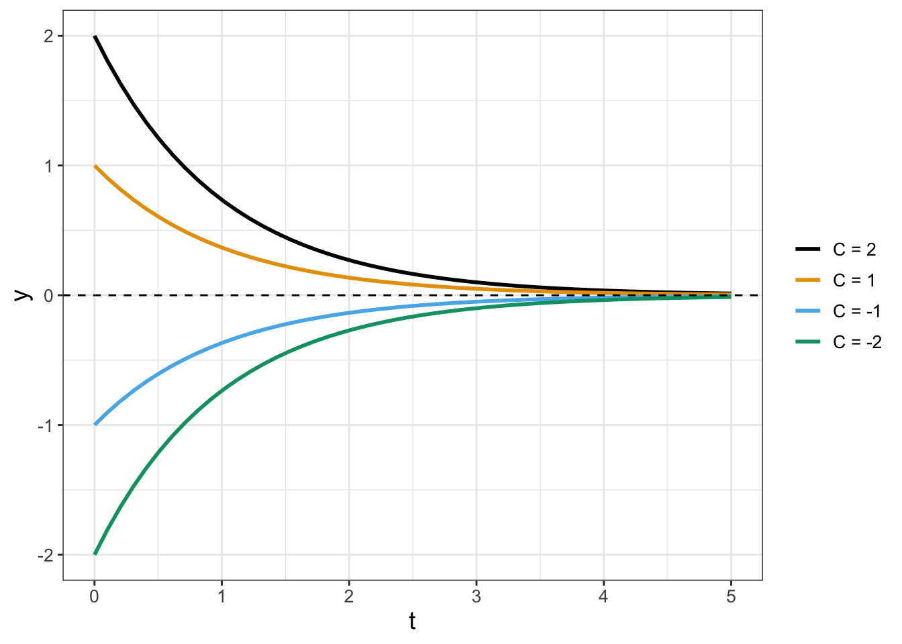
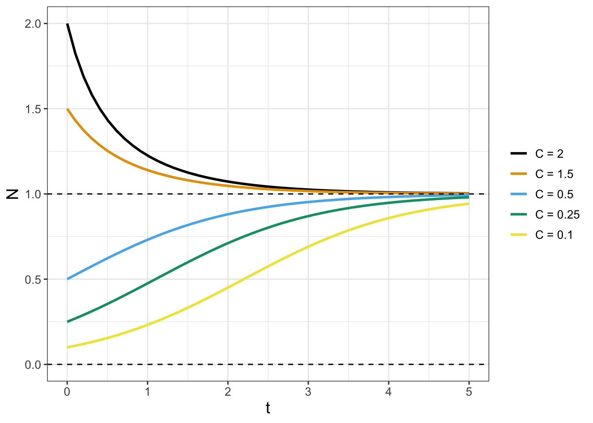
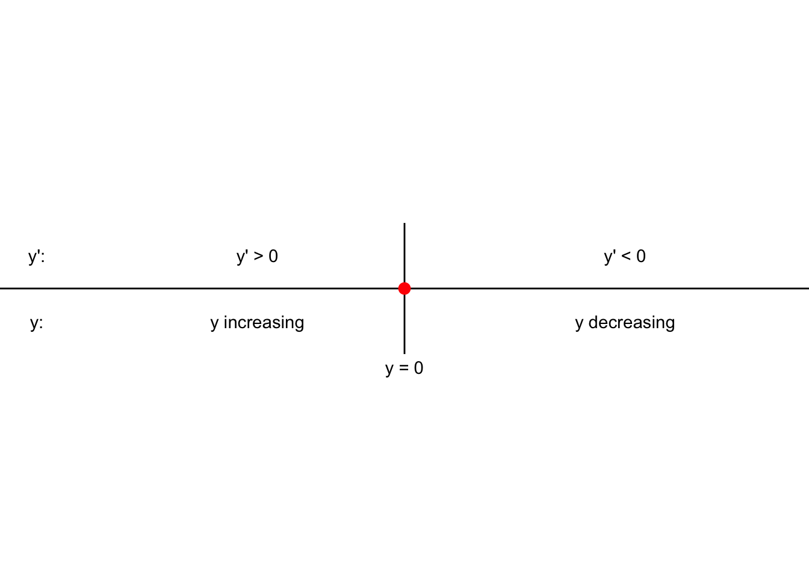
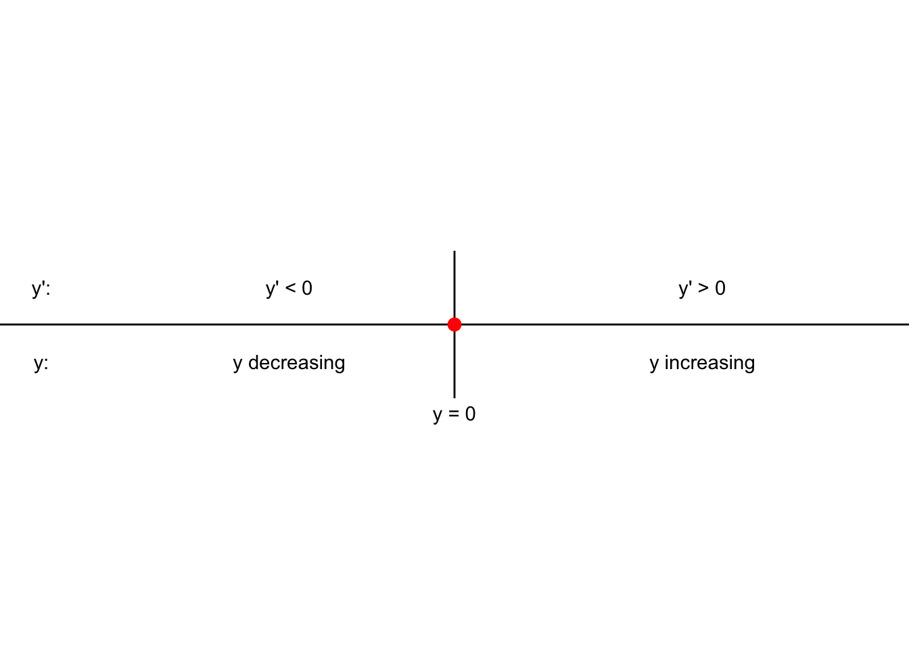
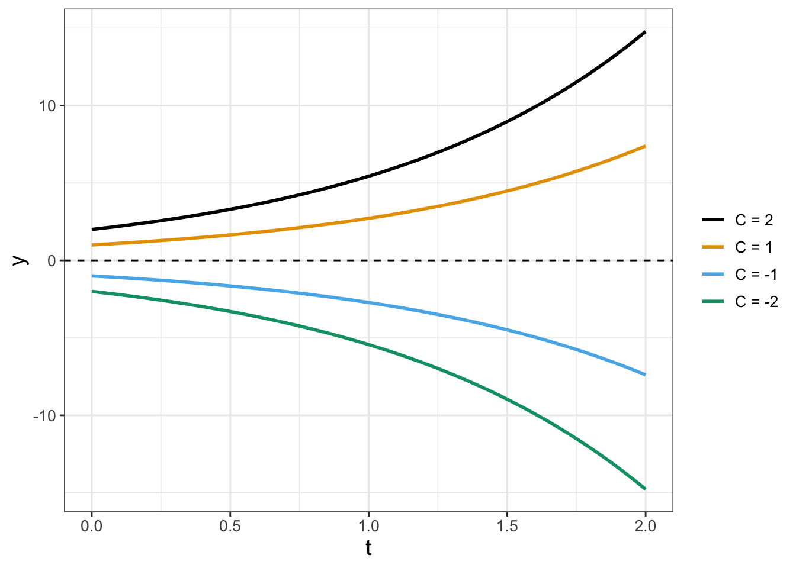
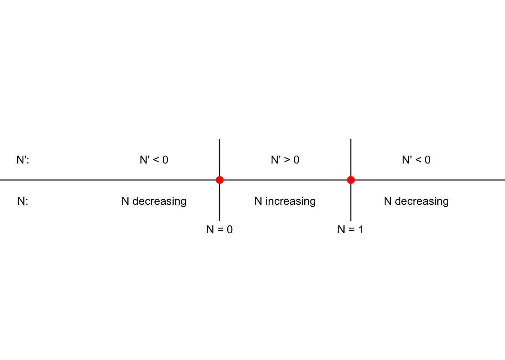

5 Phase Lines and Equilibrium Solutions
Chapter 4 explored numerical techniques to solve initial value problems. This chapter takes a step back to examine the general family of solutions to a differential equation. Will the family of solutions converge in the long run (as \(t \rightarrow \infty\)) to a constant value? Are these specific solutions that always remain constant (or independent of time)? Answering questions such as these address the qualitative behavior for a single differential equation.1 Let’s get started!
5.1 Equilibrium solutions
Chapter 3 introduced the concept of an equilibrium solution, or where the rate of change for a differential equation is zero. We can determine equilibrium solutions for a single-variable differential equation by setting the left hand side of \(\displaystyle \frac{dy}{dt}=f(y)\) equal to zero and solving for \(y\) (or whatever dependent variable describes the problem).
Example 5.1 What are the equilibrium solutions to \(\displaystyle \frac{dy}{dt}=- y\)?
Solution 5.1. For this example we know that when the rate of change is zero, this means that \(\displaystyle \frac{dy}{dt} = 0\), or when \(0 = -y\). So \(y=0\) is the equilibrium solution.
The general solution to the differential equation \(\displaystyle \frac{dy}{dt}=- y\) is \(y(t)=Ce^{-t}\), where \(C\) is an arbitrary constant. (We will explore techniques to determine this in Chapter 7.) Figure 5.1 plots different initial conditions, with the equilibrium solution shown as a horizontal line:
Notice that in Figure 5.1 as \(t\) increases, all solutions approach the equilibrium solution \(y=0\), regardless if the initial condition is positive or negative. This observation is also confirmed by evaluating the limit \(\displaystyle \lim_{t\rightarrow \infty} Ce^{-t}\), which is 0.
Example 5.2 Determine equilibrium solutions to
\[ \displaystyle \frac{dN}{dt} = N \cdot(1-N) \tag{5.1}\]
Solution 5.2. In this case the equilibrium solutions for Equation 5.1 occur when \(N \cdot(1-N) = 0\), or when \(N=0\) or \(N=1\).
The general solution to Equation 5.1 is
\[ N(t)= \frac{C}{C +(1-C) e^{-t}}. \tag{5.2}\]
Figure 5.2 displays several different solution curves for Equation 5.2.

In Figure 5.2 notice how all the solutions tend towards \(N=1\), but even solutions that start close to \(N=0\) seem to move away from the \(N=0\) equilibrium solution. Solutions in Figure 5.2 exhibit the idea of the stability of an equilibrium solution, which we discuss next.
5.2 Phase lines for differential equations
The stability of an equilibrium solution describes the long-term behavior of the family of solutions to a differential equation. Some solutions may converge to the equilibrium in the long run, while others may not. More formally stated:
The constant function \(y=y_{*}\) is considered an asymptotically stable solution to a differential equation \(\displaystyle \frac{dy}{dt} = f(y)\) if there exists a solution \(y_{S}(t)\), such that \(\displaystyle \lim_{t \rightarrow \infty} y_{S}(t) = y_{*}\).
In other words, as time increases, the the family of solutions to the differential equation is approximated by the constant function \(y=y_{*}\). You may note that the definition of stability relies on determining the solution \(y_{S}(t)\). However we can circumvent determining this solution by using ideas from calculus and the rate of change:
- If \(\displaystyle \frac{dy}{dt}<0\), the solution \(y(t)\) is decreasing.
- If \(\displaystyle \frac{dy}{dt}>0\), the solution \(y(t)\) is increasing.
So to classify stability of an equilibrium solution we can investigate the behavior of the differential equation around the equilibrium solutions.
Let’s apply this logic to our differential equation \(\displaystyle \frac{dy}{dt}=- y\) from Example 5.1. When \(y=2\), \(\displaystyle \frac{dy}{dt}=- 2 <0\), so we say the function is decreasing to \(y=0\). When \(y=-2\), \(\displaystyle \frac{dy}{dt}=- (-2) = 2 >0\), so we say the function is increasing to \(y=0\). This can be represented neatly in the phase line diagram for Figure 5.3.2

Because the solution is increasing to \(y=0\) when \(y <0\), and decreasing to \(y=0\) when \(y >0\), we say that the equilibrium solution for the differential equation \(y'=-y\) is stable, which is also confirmed by the solutions plotted in Figure 5.1.
Now let’s generalize the example \(y'=-y\) to classify the stability of the equilibrium solutions to \(\displaystyle \frac{dy}{dt} = r y\), where \(r\) is a parameter. Fortunately the equilibrium solution is still \(y=0\). We will need to consider three different cases for the stability depending on the value of \(r\) (\(r>0\), \(r<0\), and \(r=0\)):
- When \(r<0\), the phase line will be similar to Figure 5.3.
- When \(r>0\) the phase line will be as shown in Figure 5.4. We say in this case that the equilibrium solution is unstable, as all solutions flow away from the equilibrium. Several different solutions are shown in Figure 5.5 .
- When \(r=0\) we have the differential equation \(\displaystyle \frac{dy}{dt}=0\), which has \(y=C\) as a general solution. For this special case the equilibrium solution is neither stable or unstable3.


Based on the above discussion, let’s return back to the differential equation \(\displaystyle \frac{dN}{dt} = N \cdot(1-N)\) from Example 5.2). We evaluate the stability of the equilibrium solutions \(N=0\) and \(N=1\) in Table 5.1.
| Test point | Sign of \(N'\) | Tendency of solution |
|---|---|---|
| \(N=-1\) | Negative | Decreasing |
| \(N=0\) | Zero | Equilibrium solution |
| \(N=0.5\) | Positive | Increasing |
| \(N=1\) | Zero | Equilibrium solution |
| \(N=2\) | Negative | Decreasing |
Notice how the selected test points in the first column of Table 5.1 were selected to the left or the right of the equilibrium solutions. The phase line diagram of Figure 5.6 also presents the same information as in Table 5.1, but in contrast to Figure 5.3 and Figure 5.4 we need to include two equilibrium solutions. Phase line diagrams should include all the computed equilibrium solutions.

Table 5.1 and Figure 5.6 confirm that solutions move away from the equilibrium solution \(N=0\) and move towards the equilibrium solution \(N=1\). These results suggest that the equilibrium solution at \(N=1\) is stable and the equilibrium solution at \(N=0\) is unstable. Therefore, one way to define an equilibrium solution \(y_{*}\) as unstable is when \(\displaystyle \lim_{t \rightarrow -\infty} y(t) = y_{*}\).
5.3 A stability test for equilibrium solutions
Notice how when constructing the phase line diagram we relied on the behavior of solutions around the equilibrium solution to classify the stability. As an alternative we can also use the point at the equilibrium solution itself.
Consider the general differential equation \(\displaystyle \frac{dy}{dt}=f(y)\) with an equilibrium solution at \(y_{*}\). Next we apply local linearization to construct a locally linear approximation \(L(y)\) for \(f(y)\) at \(y=y_{*}\) (Equation 5.3):
\[ L(y) = f(y_{*}) + f'(y_{*}) \cdot (y-y_{*}) \tag{5.3}\]
There are two follow-on steps to simplify Equation 5.3. First, because we have an equilibrium solution, \(f(y_{*}) =0\). Second, Equation 5.3 can be written with a new variable \(P\), defined by variable \(P = y-y_{*}\). With these two steps Equation 5.3 translates to Equation 5.4:
\[ \frac{dP}{dt} = f'(y_{*}) \cdot P \tag{5.4}\]
Does Equation 5.4 look familiar? It should! This equation is similar to the example where we classified the stability of \(\displaystyle \frac{dy}{dt} = ry\) (notice that \(f'(y_{*})\) is a number). Using this information, a test to classify the stability of an equilibrium solution is the following:
Local linearization stability test for equilibrium solutions: For a differential equation \(\displaystyle \frac{dy}{dt} = f(y)\) with equilibrium solution \(y_{*}\), we can classify the stability of the equilibrium solution through the following:
- If \(f'(y_{*})>0\) at an equilibrium solution, the equilibrium solution \(y=y_{*}\) will be unstable.
- If \(f'(y_{*}) <0\) at an equilibrium solution, the equilibrium solution \(y=y_{*}\) will be stable.
- If \(f'(y_{*}) = 0\), we cannot conclude anything about the stability of \(y=y_{*}\).
Let’s return back to the differential equation \(\displaystyle \frac{dN}{dt} = N \cdot(1-N)\) from Example 5.2 and apply the local linearization stability test, \(f'(N)=1-2N\). Since \(f'(0)=1\), which is greater than 0, the equilibrium solution \(N=0\) is unstable. Likewise, if \(f'(1)=-1\), the equilibrium solution \(N=1\) is stable.
Applying the local linearization test may be easier to quickly determine stability of an equilibrium solution. Guess what? This test also is a simplified form of determining stability of equilibrium solutions for systems of differential equations. We will explore this more in Chapter 19.
5.4 Exercises
Exercise 5.1 For the following differential equations, (1) determine any equilibrium solutions, and (2) classify the stability of the equilibrium solutions by applying the local linearization test.
\(\displaystyle \frac{dS}{dt} = 0.3 \cdot(10-S)\)
\(\displaystyle \frac{dP}{dt} = P \cdot(P-1)(P-2)\)
Exercise 5.2 Using your results from Exercise @ref(exr:eq-soln-ex), construct a phase line for each of the differential equations and classify the stability of the equilibrium solutions.
Exercise 5.3 A population grows according to the equation \(\displaystyle \frac{dP}{dt} = \frac{P}{1+2P} - 0.2P\).
- Determine the equilibrium solutions for this differential equation.
- Classify the stability of the equilibrium solutions using the local linearization stability test.
Exercise 5.4 (Inspired by Logan and Wolesensky (2009)) A cell with radius \(r\) assimilates nutrients at a rate proportional to its surface area, but uses nutrients proportional to its volume, according to the following differential equation:
\[ \frac{dr}{dt} = k_{A} 4 \pi r^{2} - k_{V} \frac{4}{3} \pi r^{3}, \]
where \(k_{A}\) and \(k_{V}\) are positive constants.
- Determine the equilibrium solutions for this differential equation.
- Construct a phase line for this differential equation to classify the stability of the equilibrium solutions.
- Classify the stability of the equilibrium solutions using the local linearization stability test. Are your conclusions the same from the previous part?
Exercise 5.5 (Inspired by Thornley and Johnson (1990)) The Chanter equation of growth is the following, where \(W\) is the weight of an object:
\[ \frac{dW}{dt} = W(3-W)e^{-Dt} \]
Use this differential equation to answer the following questions.
- What happens to the rate of growth (\(\displaystyle \frac{dW}{dt}\)) as \(t\) grows large?
- What are the equilibrium solutions to this model? Are they stable or unstable?
- Notice how the equilbrium solutions are the same as those for the logistic model. Based on your previous work, why would this model be a more realistic model of growth than the logistic model \(\displaystyle \frac{dW}{dt} = W(3-W)\)?
Exercise 5.6 Red blood cells are formed from stem cells in the bone marrow. The red blood cell density \(r\) satisfies an equation of the form
\[ \frac{dr}{dt} = \frac{br}{1+r^{n}} - c r, \]
where \(n>1\) and \(b>1\) and \(c>0\). Find all the equilibrium solutions \(r_{*}\) to this differential equation. Hint: can you factor an \(r\) from your equation first?
Exercise 5.7 (Inspired by Berg (2011)) Organisms that live in a saline environment biochemically maintain the amount of salt in their blood stream. An equation that represents the level of \(S\) in the blood is the following:
\[ \frac{dS}{dt} = I + p \cdot (W - S), \]
where the parameter \(I\) represents the active uptake of salt, \(p\) is the permeability of the skin, and \(W\) is the salinity in the water.
- First set \(I=0\). Determine the equilibrium solutions for this differential equation. Express your answer \(S_{*}\) in terms of the parameters \(p\) and \(W\).
- Next consider \(I>0\). Determine the equilibrium solutions for this differential equation. Express your answer \(S_{*}\) in terms of the parameters \(p\), \(W\), and \(I\). Why should your new equilbrium solution be greater than the equilibrium solution from the previous problem?
- Classify the stability of both equilibrium solutions in both cases using the local linearization stability test.
Exercise 5.8 (Inspired by Logan and Wolesensky (2009)) The immigration rate of bird species (species per time) from a mainland to an offshore island is \(I_{m} \cdot (1-S/P)\), where \(I_{m}\) is the maximum immigration rate, \(P\) is the size of the source pool of species on the mainland, and \(S\) is the number of species already occupying the island. Further, the extinction rate is \(E \cdot S / P\), where \(E\) is the maximum extinction rate. The growth rate of the number of species on the island is the immigration rate minus the extinction rate, given by the following differential equation:
\[ \frac{dS}{dt} = I_{m} \left(1-\frac{S}{P} \right) - \frac{ES}{P} \]
- Determine the equilibrium solutions \(S_{*}\) for this differential equation. Expression your answer in terms of \(I_{M}\), \(P\), and \(E\).
- Classify the stability of the equilibrium solutions using the local linearization stability test.
Exercise 5.9 A colony of bacteria growing in a nutrient-rich medium depletes the nutrient as they grow. As a result, the nutrient concentration \(x(t)\) is steadily decreasing. The equation describing this decrease is the following:
\[ \frac{dx}{dt} = - \mu \frac{x \cdot (\xi- x)}{\kappa + x}, \]
where \(\mu\), \(\kappa\), and \(\xi\) are all parameters greater than zero.
- Determine the equilibrium solutions \(x_{*}\) for this differential equation.
- Construct a phase line for this differential equation and classify the stability of the equilibrium solutions.
Exercise 5.10 A cell with length \(L\) assimilates nutrients at a rate proportional to its surface area, but uses nutrients proportional to its volume, according to the following differential equation:
\[ \frac{dL}{dt} = k_{A} 6 L^{2} - k_{V} L^{3}, \]
where \(k_{A}\) and \(k_{V}\) are positive constants.
- Determine the equilibrium solutions for this differential equation.
- Construct a phase line for this differential equation to classify the stability of the equilibrium solutions.
- Classify the stability of the equilibrium solutions using the local linearization stability test. Are your conclusions the same from the previous part?
Exercise 5.11 The steady state for the differential equation \(\displaystyle \frac{dS}{dt} = \frac{rU}{M}(M-S) - \lambda S\) is \(\displaystyle S_{*} = \frac{rUM}{rU+\lambda M}\). Apply the local linearization stability test to determine the stability of this equilibrium solution.
Exercise 5.12 Can a solution curve cross an equilibrium solution of a differential equation?
Berg, Hugo van den. 2011. Mathematical Models of Biological Systems. Oxford, New York: Oxford University Press.
Logan, J. David, and William Wolesensky. 2009. Mathematical Methods in Biology. 1st ed. Hoboken, N.J: Wiley.
Thornley, John H. M., and Ian R. Johnson. 1990. Plant and Crop Modelling: A Mathematical Approach to Plant and Crop Physiology. Caldwell, New Jersey: Blackburn Press.
Qualitative behavior for coupled systems of differential equations is addressed in Chapter 6.↩︎
Sometimes arrows are used in the phase line to signify if the solutions are increasing or decreasing. I will stick to the convention presented in Figure 5.3 because it illustrates connections between the differential equation and the solution.↩︎
Arguably when \(r=0\) the resulting differential equation \(y'=0\) is different than \(y'=ry\); something peculiar is going on here - which is discussed more in Chapter 20.↩︎